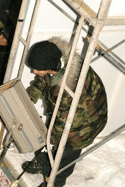
照明担当：MASAYA
（DMなども制作してくれたデザイナーです）
|
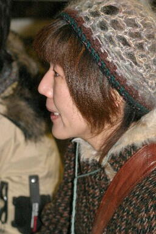
運営スタッフ代表と照明も担当：樫村美穂
終了後、延々と号泣。笑
|
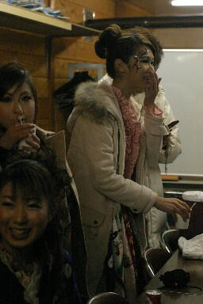
モデルたちも、緊張から解き放たれ笑顔♪
|
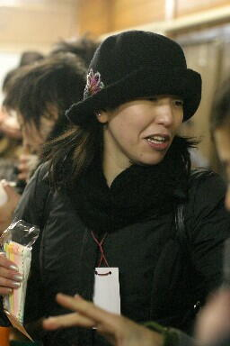
運営スタッフ代表その２：福松香
細かい気配りが光ってました
|
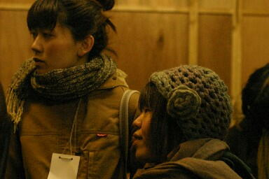
小松さん・さかわきさん
クラフトカフェで知り合った二人も、参加してくれました。
|
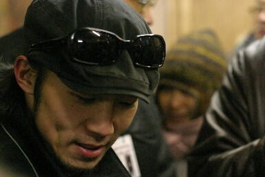
仕事をやりとげたオトコの顔だな。
|
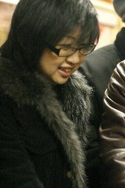
MC：azuちゃん 低音ヴォイスが、響きました。
FMノースウェーブでコメンテーター勤めるのは
だてじゃないね！
|
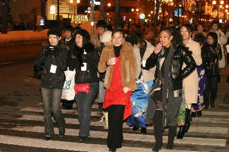
大通りから、アイボリーへ帰るところ。
目立つってばーーー！！笑
|
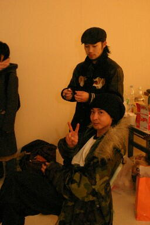
だんちゃん＆まぁちゃん
クリエイターボーイズ結成！？
|
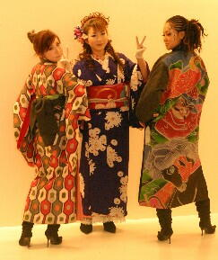
学生っぽーい。笑
個人的お気に入り写真です☆
|
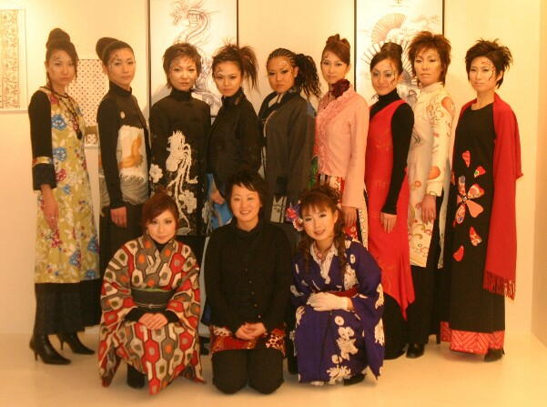
福来美々 モデル集合！
|
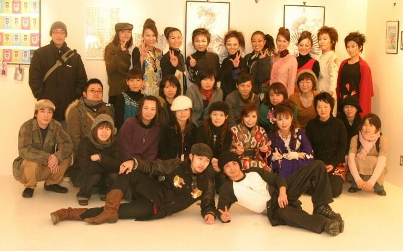
みんな、ありがとーーー！！！！このショーに関わった皆、愛してます♪
|
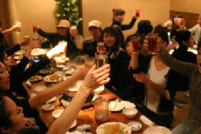
打ち上げです！はじけてくれーぃ！
|
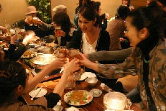
モデル軍団、アートメイクのまま打ち上げ。笑
|
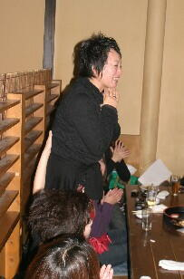
ガズー、挨拶で号泣・・・
ほんとによくがんばりました。お疲れ様です！
アナタに会えて、こんな素敵なショーをプロデュースさせてくれて、ほんとにありがとう！
会場にいらしてくださった皆様、寒い中まことにありがとうございました。
あの２０分間のショーのために、総勢４０数名で2ヶ月間がんばりました。
札幌クリエイターたち万歳！！
読売新聞北海道支社さま、ミムの角田さん・永井さん、アルバイト北海道さま
ありがとうございました。
宮平 桐
|